Signs: TouristBrown
24 items: Drawn 1, Placeholder 23
2201Distance ahead to a tourist attractionPlaceholder 2202Tourist attraction (family stand-in)Drawn2203Direction and distance to a tourist attractionPlaceholder
2202Tourist attraction (family stand-in)Drawn2203Direction and distance to a tourist attractionPlaceholder 2206Tourist attraction aheadPlaceholder
2206Tourist attraction aheadPlaceholder 2207Tourist attraction (direction)Placeholder
2207Tourist attraction (direction)Placeholder 2308Nature reservePlaceholder
2308Nature reservePlaceholder 2310Leisure facilityPlaceholder
2310Leisure facilityPlaceholder 2313Theme parkPlaceholder
2313Theme parkPlaceholder 2315Beach or coastal attractionPlaceholder
2315Beach or coastal attractionPlaceholder
2202Tourist attraction (family stand-in)Drawn2203Direction and distance to a tourist attractionPlaceholder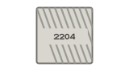
2204Direction and distance to a Tourist Information Point or CentrePlaceholder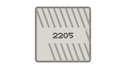
2205Sign on a primary or non-primary route indicating location of a Tourist Information Centre or PointPlaceholder2206Tourist attraction aheadPlaceholder2207Tourist attraction (direction)Placeholder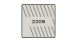
2208Direction to a tourist attraction indicated by a symbolPlaceholder2209Distance ahead to a tourist attractionPlaceholder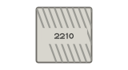
2210Junction ahead leading to or along a route passing through places of interestPlaceholder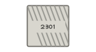
2301Picnic sitePlaceholder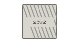
2302Direction and distance to a camping and caravan site as defined in the caption under diagram 2301Placeholder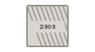
2303Sign on a primary or non-primary route indicating distance and direction to a hostelPlaceholder2304Direction and distance to a hostel as defined in the caption under diagram 2303Placeholder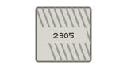
2305Sign on a primary or non-primary route indicating distance and direction to a picnic areaPlaceholder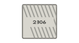
2306Direction and distance to a picnic areaPlaceholder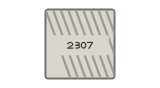
2307Sign on a primary or non-primary route indicating distance ahead to a parking place with public toilets that has facilities for disabled persons, Tourist Information Centre or Point, public telephone, picnic area and viewpointPlaceholder2308Nature reservePlaceholder2310Leisure facilityPlaceholder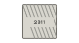
2311Sports stadiumPlaceholder2313Theme parkPlaceholder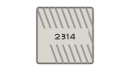
2314Wildlife parkPlaceholder2315Beach or coastal attractionPlaceholder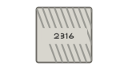
2316Tourist trailPlaceholder